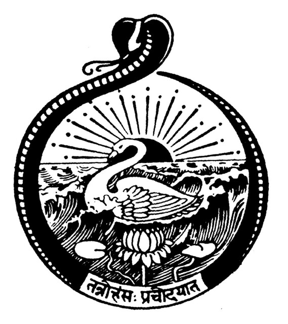
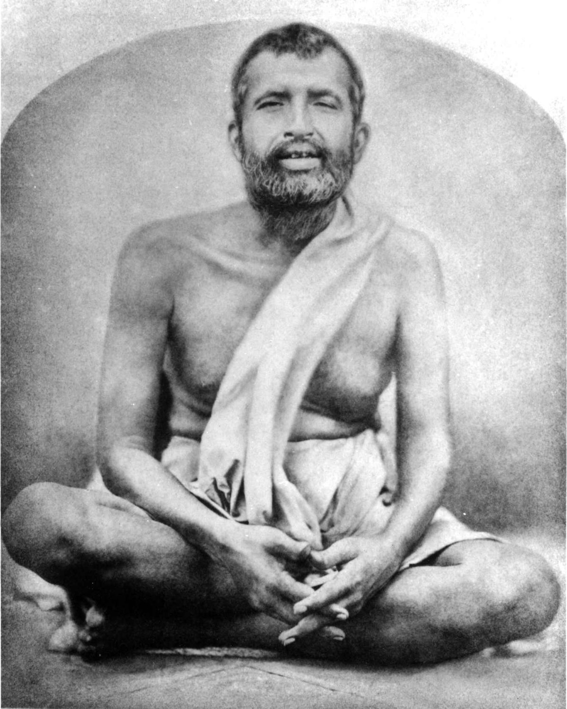
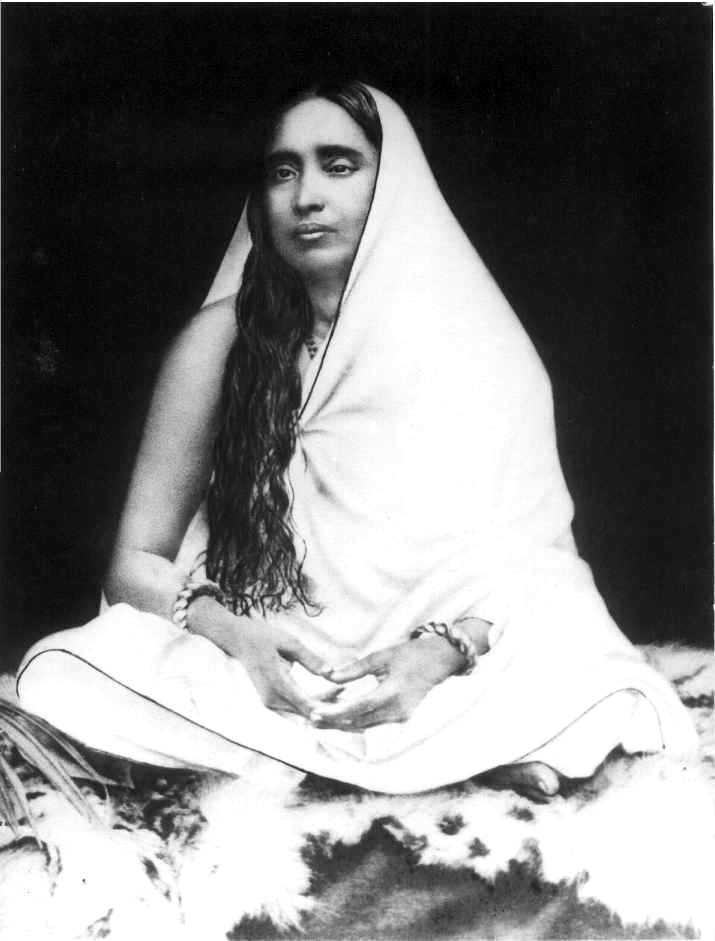
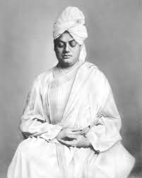
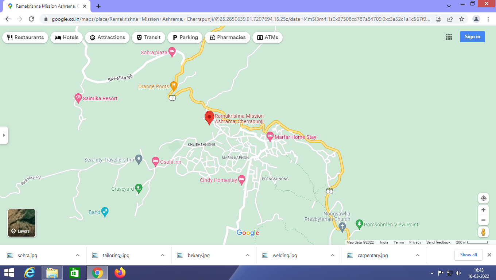

Ramakrishna Mission Ashrama, Sohra, East Khasi Hills, Meghalaya

Sri Ramakrishna was born on 18 February 1836 in the village of Kamarpukur about sixty miles northwest of Kolkata.
His parents, Kshudiram Chattopadhyaya and Chandramani Devi, were poor but very pious and virtuous.
As a child, Ramakrishna (his childhood name was Gadadhar) was dearly loved by the villagers.
From early days, he had strong disinclination towards formal education and worldly affairs.
He was, however, a talented boy, and could sing and paint well.
He was fond of serving holy men and listening to their discourses.
He was oftentimes found to be absorbed in spiritual moods.
At the age of six, he experienced the first ecstasy while watching a flight of white cranes
moving against the background of black clouds.
This tendency to enter into ecstasy intensified with age.
His father’s death when he was seven years old served only to deepen his introspection
and increase his detachment from the world.

Endearingly known as ‘Holy Mother’, Sri Sarada Devi, the spiritual consort of Sri Ramakrishna,
was born on 22 December 1853 in a poor Brahmin family in Jayrambati, a village adjoining Kamarpukur
in West Bengal. Her father, Ramachandra Mukhopadhyay, was a pious and kind-hearted person,
and her mother, Shyama Sundari Devi, was a loving and hard-working woman.

Swami Vivekananda, known in his pre-monastic life as Narendra Nath Datta,
was born in an affluent family in Kolkata on 12 January 1863.
His father, Vishwanath Datta, was a successful attorney with interests in a wide range of subjects,
and his mother, Bhuvaneshwari Devi, was endowed with deep devotion, strong character and other qualities.
A precocious boy, Narendra excelled in music, gymnastics and studies. By the time he graduated
from Calcutta University, he had acquired a vast knowledge of different subjects,
especially Western philosophy and history. Born with a yogic temperament, he used to practise meditation
even from his boyhood, and was associated with Brahmo Movement for some time.
The wavy waters in the picture are symbolic of Karma; the lotus, of Bhakti;
and the rising-sun, of Jnana.
The encircling serpent is indicative of [Raja] Yoga and the awakened Kundalini Shakti,
while the swan in the picture stands for Paramatman (Supreme Self).
Founder: Swami Vivekananda
Our Address

Address:Ramakrishna Mission Ashrama,
Sohra, Meghalaya: 793111
Phone 235302/235242
E-mail: sohra@rkmm.org
Website: www.rkmsohra.org
Copy right of this web site will be reserved under
Swami Anuragananda, Secretary, RKM, Sohra